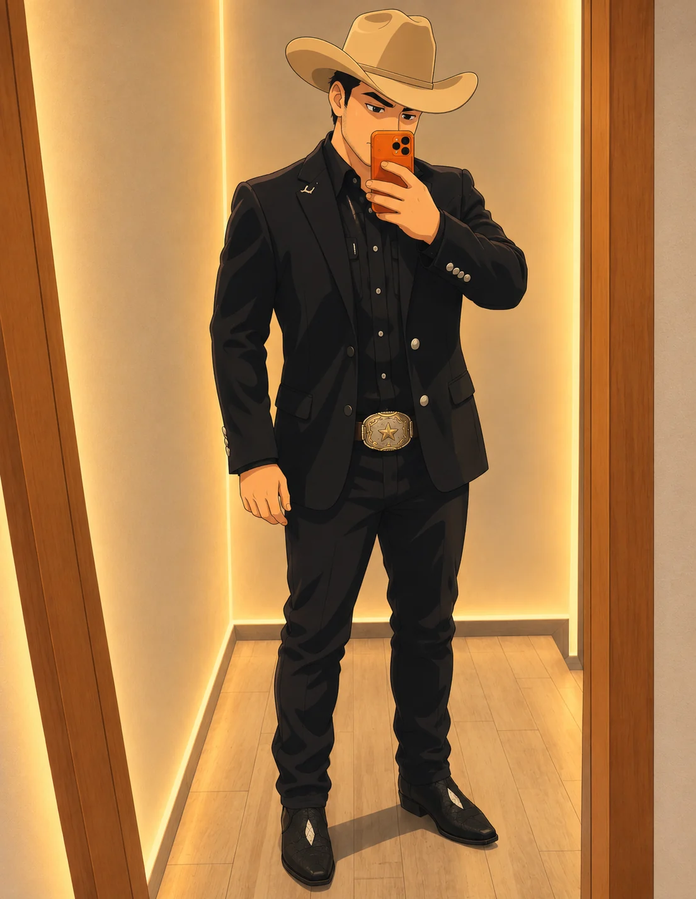

UNA PEQUEÑA EXPERIENCIA PERSONAL 001
ALDO, SIN FILTROS DE CURRÍCULUM
Hay más de mí
de lo que parece.
Quizá ya sabes algunas cosas sobre mí. Pero apostaría a que hay otras que todavía no. Aquí puedes descubrirlas a tu ritmo, una curiosidad a la vez.
✳ Advertencia: contiene datos curiosos, manías y una cantidad cuestionable de matemáticas.

PERSONA REAL, VERSIÓN ILUSTRADACAPÍTULO I · ELIGE TU PROPIA RUTA
¿Por dónde quieres empezar?
Elige lo que te dé curiosidad. No hay orden, examen final ni respuestas equivocadas. Bueno… salvo en las matemáticas.
EXPLORACIÓN PERSONAL0 / 12
descubrimientos abiertos
No soy únicamente lo que hago, lo que me gusta o lo que sé. También soy todas esas pequeñas cosas que no siempre se notan a primera vista.
— ALDOCAPÍTULO II · POR AHORA…
Y esto es solo el comienzo.
Me gustan las conversaciones que hacen descubrir cosas nuevas sobre alguien. Esta es una pequeña invitación a eso: conocerme más allá de lo evidente.